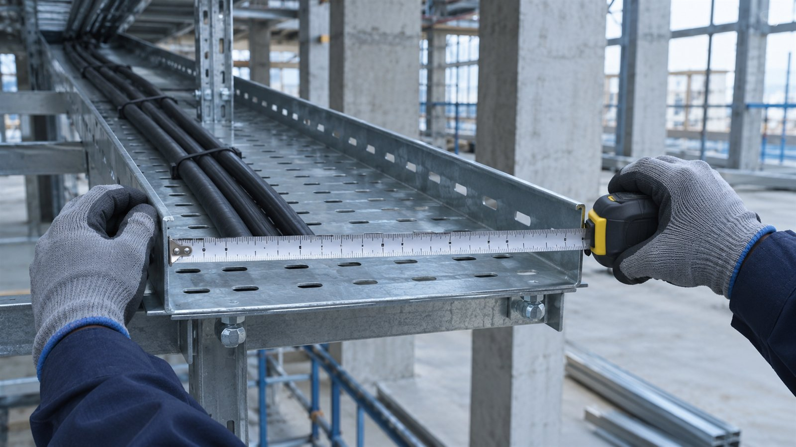

Пример · данные условные
Ведомость замечаний / пример
| Позиция | Наблюдение | Действие |
|---|---|---|
| Кабельная трасса | 120 / 105 м | Сверить план |
| Монтаж щита | Возможный дубль | Уточнить состав |
| Вывоз отходов | Нет расчёта | Запросить объём |
Реконструкция склада / кейс-концепт
Разбираем спорные позиции и готовим предметные вопросы подрядчику.
Посмотреть результатПример · данные условные
| Позиция | Наблюдение | Действие |
|---|---|---|
| Кабельная трасса | 120 / 105 м | Сверить план |
| Монтаж щита | Возможный дубль | Уточнить состав |
| Вывоз отходов | Нет расчёта | Запросить объём |
Условный собственник склада получил смету на реконструкцию. Итоговая сумма сама по себе мало что объясняет: непонятно, где расходятся объёмы и не учтён ли монтаж дважды. Нужен письменный разбор, с которым можно обсуждать конкретные строки, а не торговаться вслепую.
Показываем последовательность работы на условном проекте.
Собрали смету, чертежи и ведомости. Отметили документы, которых не хватает.
Проверили объёмы, единицы измерения, состав работ и возможные дубли.
Разделили подтверждённые замечания и вопросы, требующие ответа подрядчика.
Описали каждое замечание, основание и действие для согласования.

В этом сценарии заказчик получает:
Замечания иллюстративные. Размер экономии не заявляем: он зависит от подтверждённых исправлений.
Пример · данные условные
| Позиция | Наблюдение | Действие |
|---|---|---|
| Кабельная трасса | 120 / 105 м | Сверить план |
| Монтаж щита | Возможный дубль | Уточнить состав |
| Вывоз отходов | Нет расчёта | Запросить объём |
8 000 ₽
Ориентир из прайса. Итоговый объём и стоимость согласуем по исходным данным.
1–2 дня
Срок считаем после получения согласованного комплекта данных. Ожидание внешних ответов обсуждаем отдельно.
Подготовьте исходные документы и желаемый результат.
Форма на сайте студии работает в демонстрационном режиме.